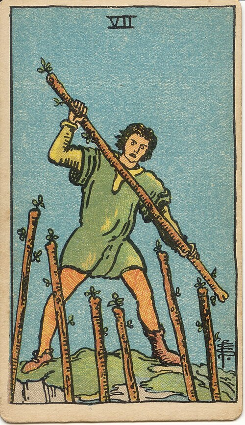
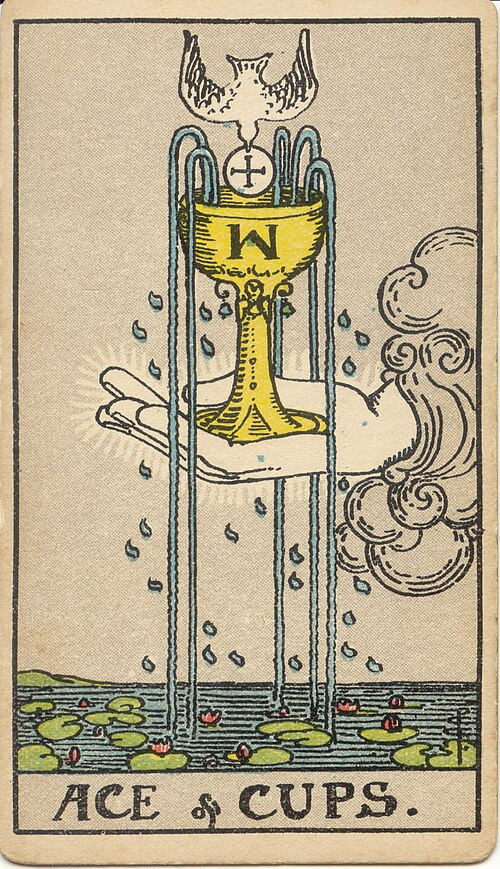
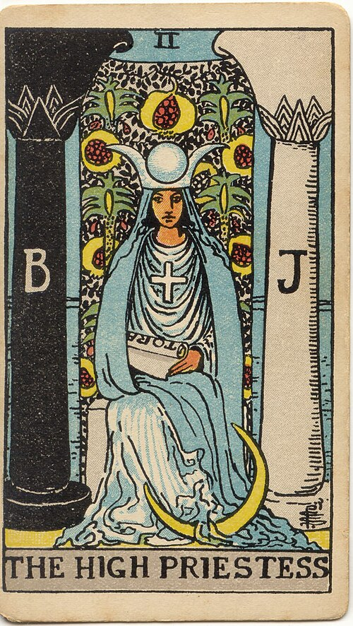
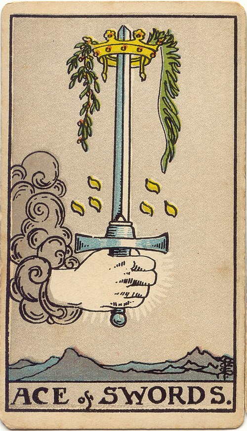
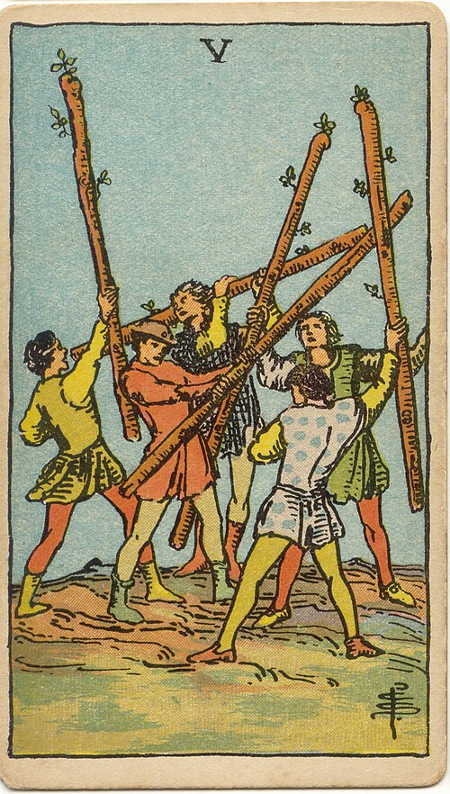

過去に、好きな人にLINEを送りすぎて、ブロックされたことがあります。
それとは別の話ですが、23歳のころ、仕事ですれ違いが続いた彼に、こんなLINEを送っていました。
「既読スルー？」
「忙しいの？」
「連絡くれるまで起きてるから。」
「もう嫌になった？」
送りながら、頭の中はずっと「別れようって言われるのかな」「私、何かしたかな」でいっぱいでした。
もしあの夜の私が、わたし日和のおすすめの「ことづて鑑定」を受けていたら、どんな鑑定書が届くのか。今の私が、実際にカードを5枚引いて、見本を作りました。
お客様の鑑定は、ご本人の許可なく載せられません。だから、わたし自身の過去の場面で見本を作りました。
仕事ですれ違いが続く彼。既読のまま、返事がこない。
送ろうとしている文：「既読スルー？」

1 今のわたし
ワンドの7
2 今のふたり
カップのエース
3 彼の内側
女教皇
4 気をつけたいこと
ソードのエース
5 これからの流れ
ワンドの5※見本です。実際の鑑定書（4,000〜5,500字）から、大事なところをまとめて載せています。
5枚の読みと、迷いの背景をくわしく見る
1 今のわたしワンドの7
守りの姿勢で、ひとりで踏ん張っているカードです。関係を失わないように、ずっと身構えている状態と出ています。
2 今のふたりカップのエース
あふれる気持ちのカードです。ふたりの間の想いは、まだ枯れていないと出ています。
3 彼の内側女教皇
言葉にしないで、内側で静かに考えるカードです。彼は今、気持ちを言葉にする余裕がない状態なのかもしれません。（カードに出ていることで、彼の気持ちを言い切るものではありません）
4 気をつけたいことソードのエース
はっきりさせたい気持ちが、言葉の刃になりやすいカードです。「既読スルー？」のように白黒をつける問いは、相手には切っ先のように届くことがあります。
5 これからの流れワンドの5
小さなぶつかり合いが起きやすい流れです。ただ、ワンドの5は、本気で関わり合うからこその摩擦。言葉の選び方しだいで、話し合うきっかけにも変わります。
5枚をひとつの流れとして想いは残っている。だからこそ、言葉を選ぶ時
ふたりの想いはまだあり（カップのエース）、彼は内側で静かに考えている（女教皇）。そこへ、守りに入ったわたし（ワンドの7）が白黒をつける言葉（ソードのエース）を送ると、ぶつかり合い（ワンドの5）になりやすい。そんな流れが出ています。
迷いの背景「返事がない＝気持ちが冷めた」と結びつけてしまう不安
本当に起きているのは「返事が遅い」「仕事が忙しい時期」ということ。そこに「嫌われたのかも」という想像が重なって、送る言葉がとがっていました。
送るか待つかの目安待つ寄り。送るなら一度だけ、問いではなく気持ちを
ことづて鑑定：送ろうとしていた文を、一緒に仕上げると
送ろうとしていた文：「既読スルー？」
仕上げ案A：「忙しい時期だよね。返事はいつでも大丈夫。落ち着いたら、少し声が聞けたらうれしいな」
仕上げ案B：「最近会えなくて、ちょっとさみしいです。無理しないでね」
変えたところ：①問いつめる「？」をやめて、自分の気持ちを伝える形に ②返事をしなくても大丈夫な言葉にして、相手の負担を軽く ③1通で終わる長さに
このあと、あなたの言葉で仕上げるやりとりが2往復までできます。
この見本を作りながら、あの夜の私に、この2つの文を渡してあげたかったと思いました。
有料の鑑定が合うのは、こんな時です。
・送ろうとしている文があって、そのまま送っていいか不安な時
・送るか待つかの「目安」だけでなく、この先の流れまで知りたい時
・同じ失敗をくり返したくない時
ほかに、送る一文の例までお渡しする「星読み鑑定」（5枚・4,980円）と、1か月後の見直しまでついた「みちしるべ鑑定」（9,980円）もあります。お申し込みは、LINE「月の相談室」の画面下のメニュー【本鑑定メニュー】からどうぞ。
LINE「月の相談室」を開く画面下の【本鑑定メニュー】からお申し込みいただけます